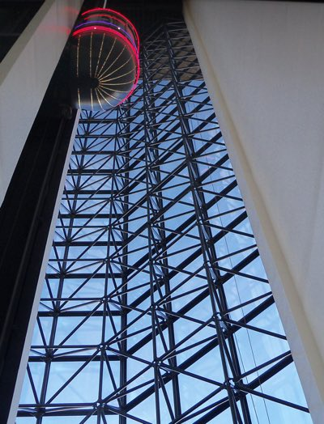

Elevators
I sometimes like to think of elevators as machines that I can use to move the rest of the everything else.
Skyhooks
Skyhooks are an excellent technology for holing up skyhooks.
The Otis Elevator Company
The Otis Elevator Company has a text engineering building in Farminton, Connecticut. It's an odd structure; a run-of-the-mill, two-story office building, utterly non-descript, except for the very tall, very thin tower that rises from it like a giant smokestack. Except it's for elevators, so they can test the elevators.